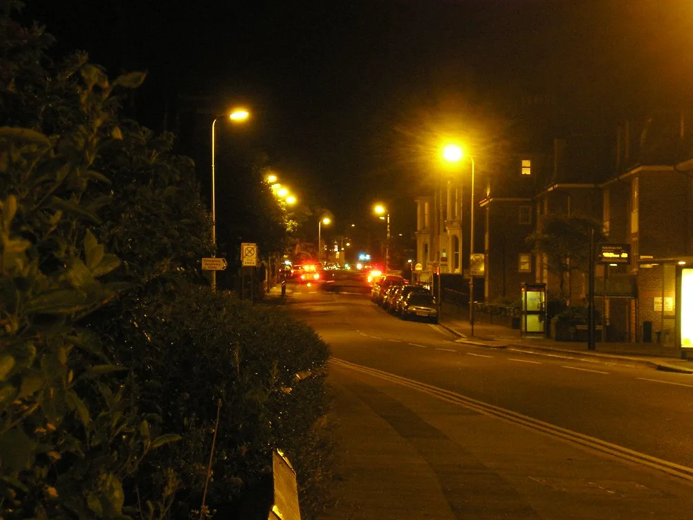

인천 흉기난동 피의자, 8차례 신고에도 방치…전자발찌 관리 '구멍' 도마
지난 13일 인천 남동구 구월동 한 건물에서 발생한 흉기난동 사건의 후폭풍이 이어지고 있다. 50대 남성 A씨는 범행 전까지 이미 8차례나 관련 신고가 접수됐던 인물로 확인됐으며, 이를 두고 경찰과 보호관찰 당국이 위험 신호를 알고도 방치했다는 비판이 커지고 있다. 경찰은 A씨의 신상 공개를 검토 중이라고 밝혔으며, 사건 발생 이틀이 지난 지금까지도 후속 수사 결과와 재발 방지 대책에 관심이 집중되고 있다.
A씨는 13일 오후 1시 48분쯤 건물 2층 식당가에서 흉기를 휘둘러 7명을, 이어 3층으로 이동해 3명을 추가로 공격한 혐의를 받고 있다. 피해자 중 19세 여성은 심정지 상태로 병원에 옮겨져 응급수술을 받았으며, 현재까지 자가 호흡을 하지 못한 채 인공호흡기에 의존하고 있는 것으로 전해졌다. A씨는 범행 당시 양손에 흉기를 테이프로 고정한 상태였던 것으로 조사됐다.

경찰이 도착하기 전, 현장에 있던 시민들이 철제 의자를 이용해 A씨를 제압하면서 추가 피해를 막았다. 양손에 흉기를 든 남성과 맨몸으로 맞선 긴박한 제압 장면이 담긴 영상이 공개되며 시민들의 용기에 대한 평가가 이어지고 있다. 경찰 조사에서 A씨는 "병원 치료에 대한 불만을 사회에 알리기 위해 범행했다"는 취지로 진술한 것으로 알려졌다. 자신을 돌보지 않고 위험한 상황에 뛰어들어 더 큰 피해를 막은 시민들의 대응은 온라인에서도 큰 화제가 되며 포상 논의로 이어지고 있다.
논란의 핵심은 A씨의 전력과 사전 경고 신호다. A씨는 과거 살인미수 혐의로 징역 4년을 선고받고 복역했으며, 2019년부터 전자발찌를 착용해온 보호관찰 대상자였다. 그런데도 범행 전까지 여러 차례 관련 신고가 쌓였던 것으로 파악되면서, 전자발찌 부착 대상자에 대한 상시 위험도 평가와 경찰·보호관찰소 간 정보 공유 체계가 제대로 작동했는지에 대한 의문이 제기되고 있다.
전자발찌 제도는 재범 우려가 큰 대상자의 위치를 추적해 범죄를 예방하자는 취지로 도입됐지만, 위치 정보만으로는 흉기 소지나 범행 의도 같은 실질적 위험 징후를 사전에 걸러내기 어렵다는 구조적 한계가 꾸준히 지적돼왔다. 이번 사건처럼 다수의 신고 기록이 누적됐음에도 선제적 개입으로 이어지지 못한 사례가 드러나면서, 단순 위치추적을 넘어선 위험도 재평가 절차 마련이 필요하다는 목소리가 커지고 있다.
비슷한 유형의 사건이 반복될 때마다 보호관찰 대상자에 대한 사전 신고 기록과 위험도 평가를 연계해야 한다는 제언이 되풀이됐지만, 실제 제도 개선 속도는 더뎠다는 평가가 많다. 전문가들은 경찰의 112 신고 데이터와 보호관찰소의 전자감독 기록이 분리 운영되는 현재 구조에서는, 같은 대상자에 대한 경고 신호가 쌓여도 종합적인 위험 판단으로 이어지기 어렵다고 지적한다.
경찰은 A씨에 대한 구속영장 신청과 함께 과거 신고 처리 과정 전반을 들여다볼 방침이다. 보호관찰 당국 역시 전자발찌 부착자 관리 체계에 대한 점검에 나설 것으로 예상된다. 피해자 치료와 회복이 우선이지만, 반복된 경고 신호가 왜 범행 예방으로 이어지지 못했는지에 대한 명확한 설명과 제도 보완이 뒤따라야 한다는 지적이 나온다. 이번 사건이 보호관찰 제도 전반을 다시 들여다보는 계기가 될지 주목된다.